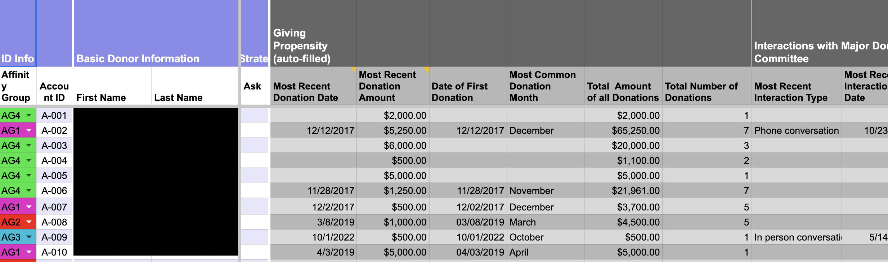
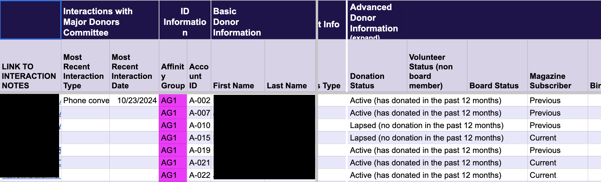

Katy Wells
software engineer
educator
maker of things
my projects
little red riding hoodan html project
project description
play as little red riding hood in this html text adventure game

built in collaboration with a programming partner in the futureCodeNY2 software engineering program
donor databasea google apps script and html project
project description
major donor database built for rethinking schools
allows volunteers to enter info from donor interactions which autopopulates in the main donor database
automatically pulls donation data for each donor and provides relevant giving propensity info for donor relations planning
lead designer and programmer
about me
I'm a software engineer with a passion for building tools that make the world more equitable, inclusive, and empowering—especially in education. After 25 years as a teacher and nonprofit leader, I transitioned into tech to solve real-world problems with thoughtful, human-centered code.
My background gives me a unique lens: I don't just focus on the technical challenges—I focus on the people I'm building for. I bring creativity, problem-solving, and a deep commitment to social impact into every project. Whether I'm pair programming, designing intuitive solutions, or contributing to mission-driven teams, I lead with empathy, curiosity, and purpose.
Outside of tech, you'll find me crafting intricate Halloween costumes from cardboard, hot glue, and imagination—turning everyday materials into something magical. I also love puzzles and learning how things work. For me, coding is another form of making—powerful, purposeful, and endlessly rewarding.